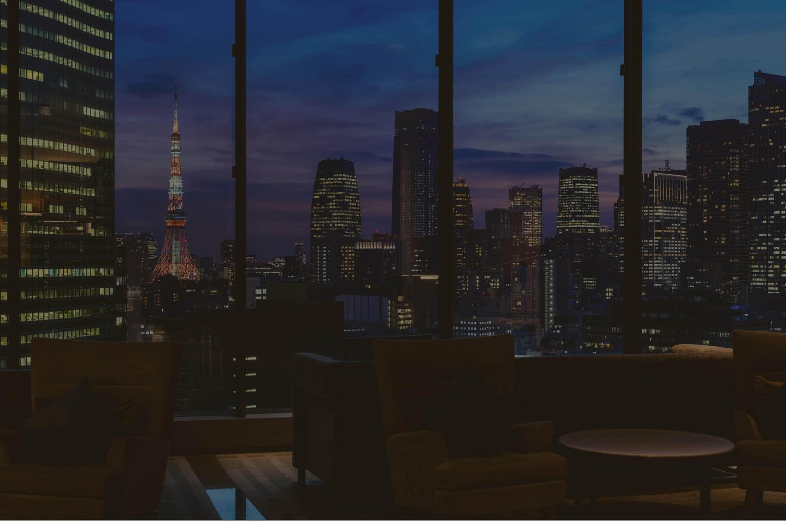
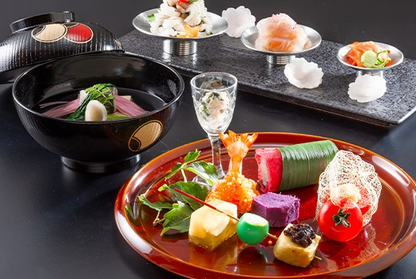
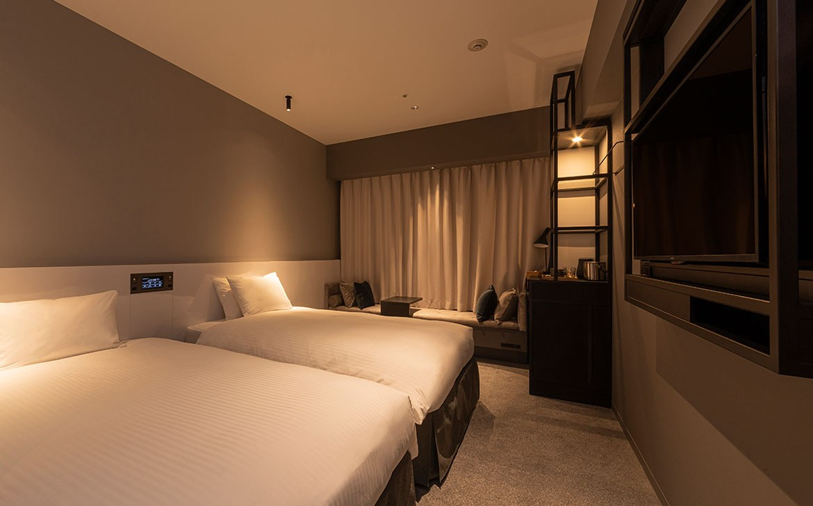
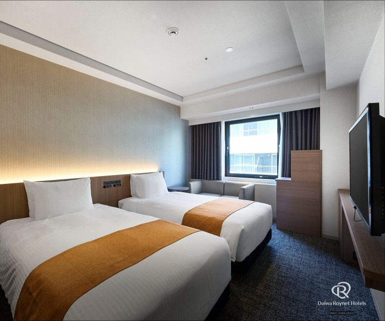
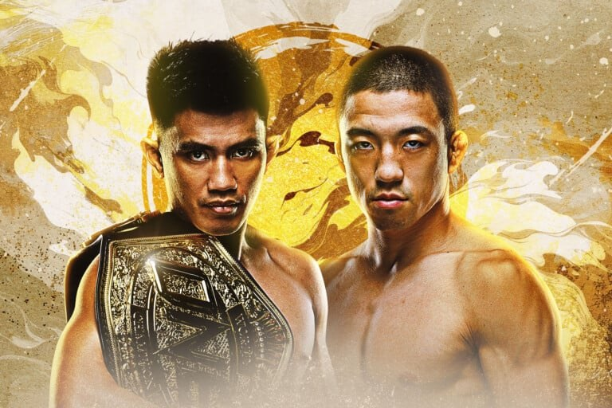

NOVEMBER 11-20, 2026 / 4 TRAVELERS
Japan,
together.
Tokyo nights. Kyoto kaiseki.
Osaka together. ONE fight night.
Tokyo skyline / Mitsui Garden Hotel Ginza PREMIER
09 NIGHTS03 CITIES01 UNFORGETTABLE FIGHT NIGHT
01 / THE JOURNEY
The route.
November 11-20, 2026 / 4 travelers / 9 nights / 2 rooms / Separate beds.
TokyoNov 11-13 / 2 nightsArrive & settle in
→KyotoNov 13-14 / 1 nightRyokan & kaiseki
→OsakaNov 14-17 / 3 nightsNamba as our base
→TokyoNov 17-20 / 3 nightsONE & the final days
Estimated core cost for all four$6,977¥1,104,120 total / about $1,744 per person
Hotels + intercity travel + CAT3 tickets
See the full breakdown ↓Planning guide based on the original hotel estimates. Reservations have not been made. Exclusions and booking notes are listed below.
02 / WHERE WE STAY
Where we stay.
Kaiseki dinner and breakfast at the Kyoto inn. All other hotels are room only.




Official event artwork / ONE Championship
03 / THE MAIN EVENT
Fight night,
Tokyo.
ONE SAMURAI 5
Wednesday, November 18, 2026
Doors 4:00 PM / Event 5:30 PM JST
EBARA WAVE Arena Ota, Tokyo
CAT3 / ¥16,500$104 per person / ¥66,000 ($417) for four
CAT3: green outer section. Four seats together are not yet confirmed.
04 / THE NUMBERS
The budget.
All amounts below cover all four travelers. The original nine-night accommodation estimate is ¥920,160 (about $5,815).
| Date | Item | JPY / all four | USD / all four |
|---|---|---|---|
| Nov 11-13 · Tokyo | Mitsui Garden Hotel Ginza PREMIER | ¥251,520 | $1,589 |
| Nov 13-14 · Kyoto | Kyokoyado Muromachi Yutone | ¥144,000 | $910 |
| Nov 14-17 · Osaka | Hotel Keihan Namba Grande | ¥260,040 | $1,643 |
| Nov 17-20 · Tokyo | Daiwa Roynet Hotel Ginza PREMIER | ¥264,600 | $1,672 |
| Nov 13 | Shinkansen: Tokyo to Kyoto | ¥55,880 | $353 |
| Nov 14 | Kyoto to Osaka: local travel allowance | ¥4,000 | $25 |
| Nov 17 | Shinkansen: Shin-Osaka to Tokyo | ¥58,080 | $367 |
| Nov 18 | ONE SAMURAI 5: CAT3 tickets × 4 | ¥66,000 | $417 |
| ESTIMATED CORE TOTAL | ¥1,104,120 | $6,977 | |
$1,744 per person¥276,030 / based on four travelers
Reference exchange rate: USD 1 = JPY 158.25.
USD figures are rounded; individual rounded rows may not sum exactly.
Booking note: Original hotel estimates; no bookings made. Yutone's November 13 dinner-inclusive stay needs reconfirmation. The original Mitsui rate was non-refundable. Rail estimates use standard-season Nozomi reserved-seat fares; actual fares may vary.
Not included: Flights, airport transfers, other city transport, other meals, sightseeing, local accommodation taxes and transaction fees.